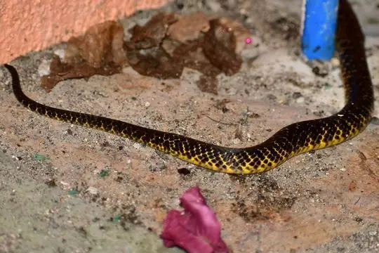

Snakes of Davao (Region XI)
A state or province of the Philippines
14 snake species are recorded in Davao (Region XI), a state or province of the Philippines, in SnakeList: 5 venomous and 9 non-venomous, from 5 families.
- 14species
- 5venomous
- 9non-venomous
- 5families
SnakeList records where snakes live by country and by state or province, not by exact spot, so a species listed here may live in only part of Davao (Region XI). All snakes of the Philippines.
Most widely recorded
The species here that have research-grade iNaturalist records in the most places across their whole range - not just in Davao (Region XI). That shows how often people have photographed them, not how many live here.
 Common Mock ViperPsammodynastes pulverulentus
Common Mock ViperPsammodynastes pulverulentus Reticulated PythonMalayopython reticulatus
Reticulated PythonMalayopython reticulatus Paradise Tree SnakeChrysopelea paradisi
Paradise Tree SnakeChrysopelea paradisi Maren's BronzebackDendrelaphis marenae
Maren's BronzebackDendrelaphis marenae Variable Reed SnakeCalamaria lumbricoidea
Variable Reed SnakeCalamaria lumbricoidea Philippine pitviperTrimeresurus flavomaculatus
Philippine pitviperTrimeresurus flavomaculatus Gervais' Reed SnakeCalamaria gervaisii
Gervais' Reed SnakeCalamaria gervaisii
Samar CobraNaja samarensis
Snake families
Venomous and non-venomous
Venomous: 5Non-venomous: 9
6 are listed by SnakeList as dangerous to people: Philippine Coral Snake Calliophis philippinus, Philippine pitviper Trimeresurus flavomaculatus, Reticulated Python Malayopython reticulatus, Samar Cobra Naja samarensis, White-lined Water Snake Rhabdophis auriculatus, Zigzag-lined Water Snake Rhabdophis lineatus.
Habitats (rough estimate)
How many of its living snakes have each kind of habitat in SnakeList’s estimate. That estimate comes from every country, state and province where each snake is recorded - not from a survey of Davao (Region XI), and not checked species by species.
Who described them
The scientists who first described its most widely recorded snakes, and when.
- Common Mock Viper Psammodynastes pulverulentus -
- Reticulated Python Malayopython reticulatus -
- Paradise Tree Snake Chrysopelea paradisi -
- Maren's Bronzeback Dendrelaphis marenae -
- Variable Reed Snake Calamaria lumbricoidea -
- Philippine pitviper Trimeresurus flavomaculatus -
- Gervais' Reed Snake Calamaria gervaisii -
- Samar Cobra Naja samarensis -
Names and dates come from SnakeList’s reviewed species accounts; the others are looked up on Wikidata (CC0) when this page opens.
Biggest cities
The biggest cities in Davao (Region XI) from SnakeList’s city list, biggest first (placed here by their map position).
- Davao
- Magugpo Poblacion
Neighbouring states and provinces
Places in SnakeList that share a border with Davao (Region XI).
- Dinagat Islands (Region XIII) 8 species
- Northern Mindanao (Region X) 7 species
- SOCCSKSARGEN (Region XII) 3 species
All 14 species
- Common Mock Viper Psammodynastes pulverulentus
- Gervais' Reed Snake Calamaria gervaisii
- Maren's Bronzeback Dendrelaphis marenae
- Müller's Ground Snake Stegonotus muelleri
- Paradise Tree Snake Chrysopelea paradisi
- Philippine Coral Snake Calliophis philippinus venomous
- Philippine pitviper Trimeresurus flavomaculatus venomous
- Philippines Bronzeback Dendrelaphis philippinensis
- Reddish Rat Snake (erythrurus) Coelognathus erythrurus
- Reticulated Python Malayopython reticulatus
- Samar Cobra Naja samarensis venomous
- Variable Reed Snake Calamaria lumbricoidea
- White-lined Water Snake Rhabdophis auriculatus venomous
- Zigzag-lined Water Snake Rhabdophis lineatus venomous
No snake here matches that.